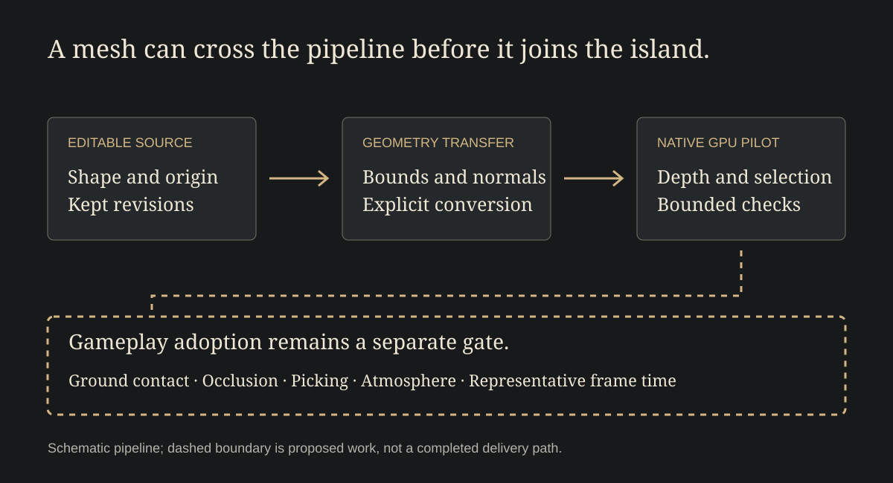

A small shrine looks promising on the workbench. It has a shape, a palette and a base. Turn it around and there is something pleasing to look at from the other side too.
Now give it a place on the island.
Where does it meet the ground? What can stand in front of it? When someone points at its roof, what do they select?
The object has acquired neighbours. That changes the questions.
Keep a way back to the material
SkyStack Builder's Blender experiments keep the editable model beside its exported geometry. Checks follow its size, origin, surfaces and materials through that journey.
Those details have a practical purpose. An object should arrive at the size we meant, with its base where we expect it. If it doesn't, there should be a way back to the material that made it.
The generation script keeps existing revisions rather than silently replacing them. An earlier attempt remains available to return to, compare or try differently.
Looking becomes doing
A separate native pilot draws real mesh geometry and gives it a small set of controls: orbit, zoom, recenter and select.
A click and the beginning of a drag can look much alike. The pilot gives them a boundary. A small click selects; moving far enough begins an orbit. Losing focus or mouse capture clears the gesture.
That is a modest detail with a large place in the experience. Someone came to choose an object. The view should not move away from them by accident. Someone came to look around. The object should not be selected merely because that movement began over it.
The model is becoming something a person can act upon.
Give it neighbours


The shrine's asset checks and the pilot's mesh scene are separate pieces of work. Together they give us useful material for the next experiment. They do not yet show the shrine living among the game's terrain, weather and characters.
A roof that is easy to select alone may become awkward beside a taller block. A base that looks settled on an empty grid may float above a slope. Put several copies together and their silhouettes may stop feeling distinct.
These are questions about the object in company.
Try one place properly
The next study would choose one asset and one use for it. Put it somewhere the player has a reason to visit. Look from both sides and from above. Try selecting it with a neighbour in the way.
Ask what the object seems to be for and what the person expects to happen when they choose it. Observe the scene's performance as well as its appearance. Keep the earlier representation available for comparison.
A beautiful model is a beginning. There is another kind of satisfaction in finding where it belongs.